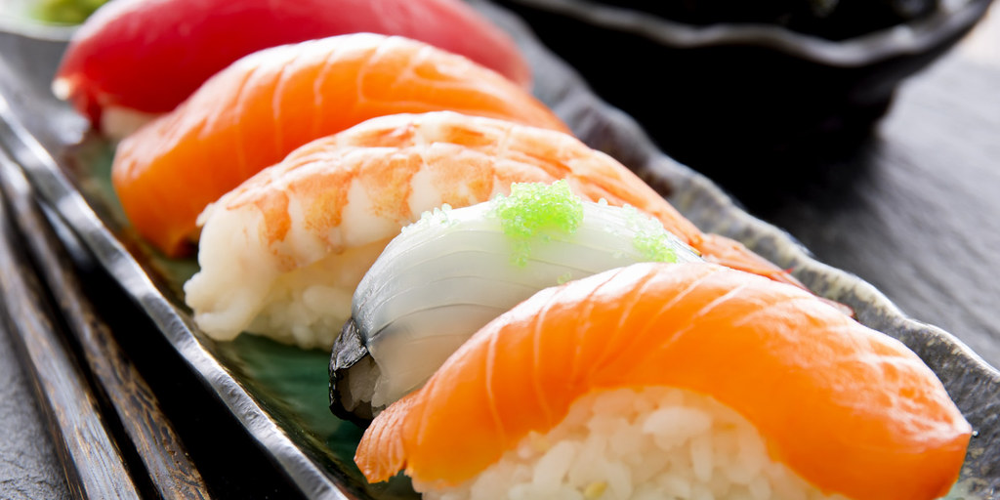
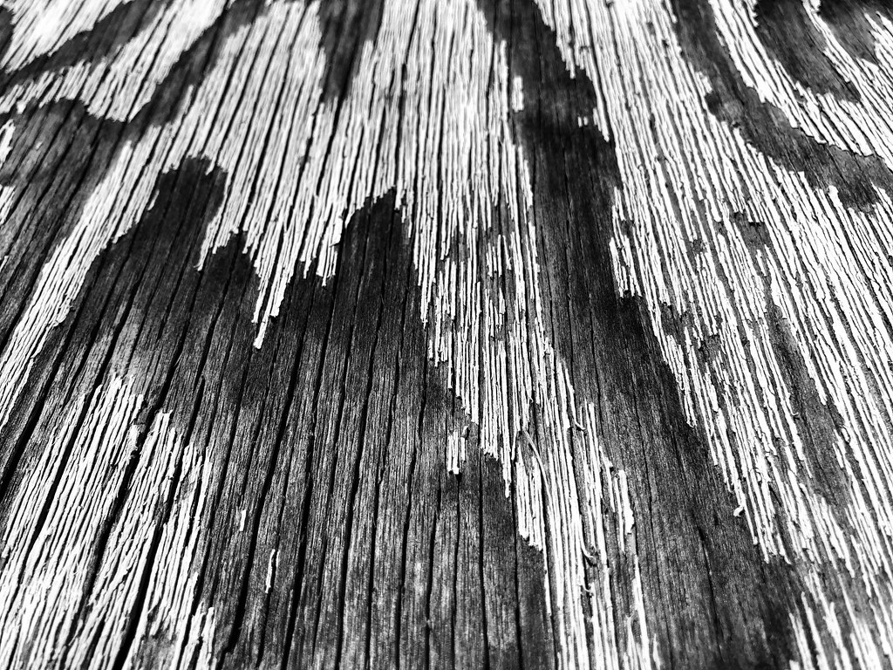
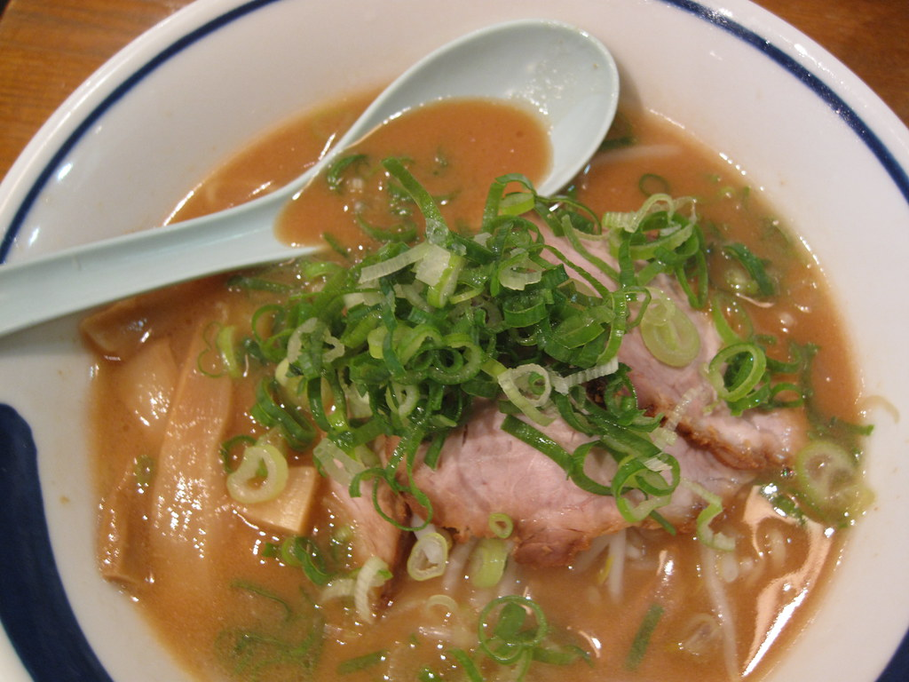
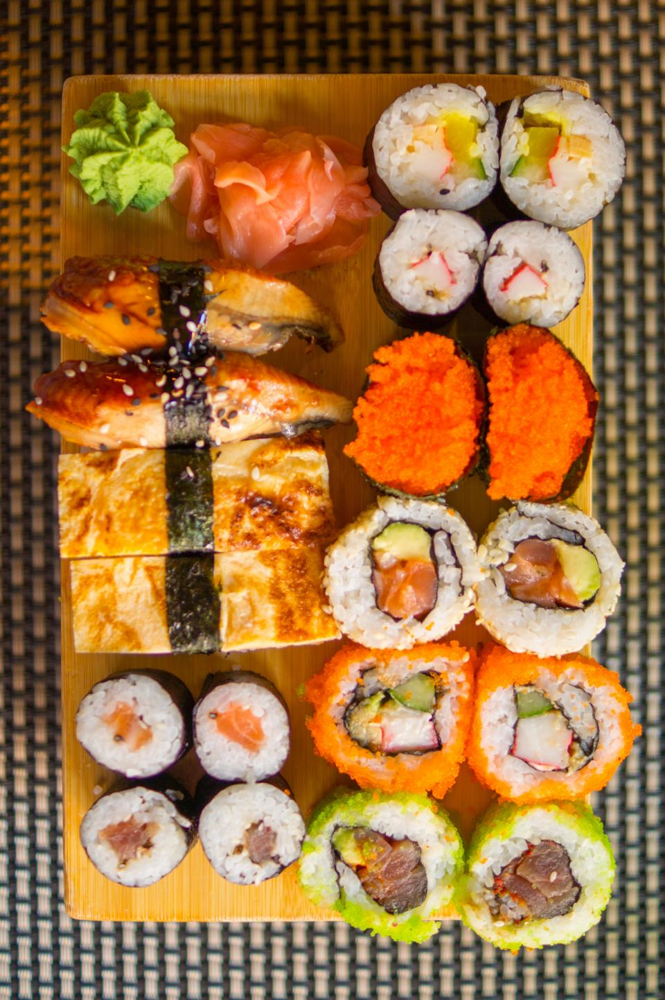

おすすめ
握りランチ「竹」
当店の看板メニューである握りランチです。その日仕入れたネタを、職人が一貫一貫丁寧に握ります。舎利はやや量のある食べ応えのある仕立てで、山葵もしっかりと効いています。辛いのが苦手な方は、ご注文の際にご相談ください。
竹寿し
お電話 0256-63-7979

カウンターの向こうで、長年ネタと向き合ってきた大将がおります。口数は多くありませんが、その日仕入れたネタを見て、その日出す一皿を決める。仕事は静かに、けれど丁寧に。飾った言葉よりも、握った一貫で応えるタイプの職人です。杣木で寿司を握り続けてきたその手つきに、昔ながらの店の空気が宿っています。
昔ながらの佇まいのまま、杣木でのれんを掲げてきました。
初めてのお客様にも、女将が気さくに声をかけてくれます。常連さんとの会話が絶えず、カウンター越しの空気をやわらかくしてくれる存在です。大将の寡黙さと女将の朗らかさ、その対照が竹寿しらしさになっています。運ばれてくる小鉢やお椀にも、その心遣いが表れています。

杣木で長く親しまれてきたランチメニューです。ネタは仕入れによって日替わり、小鉢・お椀が付きます。
おすすめ
当店の看板メニューである握りランチです。その日仕入れたネタを、職人が一貫一貫丁寧に握ります。舎利はやや量のある食べ応えのある仕立てで、山葵もしっかりと効いています。辛いのが苦手な方は、ご注文の際にご相談ください。
「竹」よりも軽めにお楽しみいただける握りランチです。ランチタイムに気軽にお立ち寄りいただけます。
握りランチとはまた違った組み合わせでお楽しみいただけるランチです。

彩りよく盛り付けたちらし寿司もご用意しています。
お寿司をセットでお楽しみいただける「お決まり」もございます。お酒と合わせて、ゆっくりとお召し上がりいただくお客様にも好評です。
小鉢・お椀付き。ネタは仕入れにより日替わりです。
メニュー・価格は変更になる場合がございますので、最新情報はお電話にてご確認ください。
電話でお問い合わせ竹寿しでは、地元・地酒にこだわった品揃えをしています。八海山の限定品「魚沼で候」など、通の方にも喜んでいただける一本をご用意しています。お決まりのお寿司セットと合わせて、軽く一杯という楽しみ方もできます。杣木の寿司と、地元のお酒と。カウンターでゆっくりとお過ごしください。
地元の地酒
ご用意しています
Googleの口コミでは、評価4.3・52件の声をいただいています。
老舗の昔ながらのお寿司屋さんです。ネタが素晴らしく、アットホームで良心的なお寿司屋さんでした。
優しい店主の営む、美味しいお寿司屋でした。
とても美味しいお寿司が食べられます。ランチには小鉢とお椀が付きます。
昔ながらのお寿司屋さんという雰囲気です。寡黙な大将と、愛想の良い女将さんが接客してくれます。
日によってネタが変わります。ランチでお邪魔しました。
新潟県燕市杣木
お店の前に駐車スペースがございます（台数に限りがございますので、あらかじめご了承ください）。ご来店の際は、係の者の案内に従ってお停めいただけますと幸いです。
お電話でのお問い合わせ、お待ちしております。
電話でお問い合わせ
店の様子はInstagramでもご覧いただけます。
@takezushi_tsubame